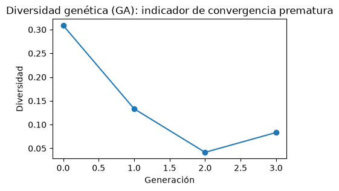

03. Desarrollo y prueba del pipeline completo
Antes de correr los experimentos completos, el pipeline se probó en miniatura con un conjunto de datos sintético de 500 filas (20 variables, 23.4 % de la clase positiva). La prueba confirmó que cada etapa funciona: preprocesamiento (20 variables pasan a 25 tras la codificación one-hot), las 4 técnicas de balanceo (ninguna, SMOTE, ADASYN y class_weight), los 4 métodos de búsqueda (malla, aleatoria, Optuna y algoritmo genético), la validación cruzada anidada, la calibración y el cálculo de SHAP. También se verificó que la métrica del bucle interno (selección de hiperparámetros) se mantenga separada de la del bucle externo (evaluación), para no mezclar ambas. Los valores obtenidos (por ejemplo, F1 de 0.52 a 0.55 y prueba de Friedman con p = 0.753) son solo de verificación, con pocos datos y pocos pliegues, y no se interpretan como resultados del estudio.
Código (27 líneas)
import sys
from pathlib import Path
PROJECT_ROOT = Path.cwd().parent
if str(PROJECT_ROOT) not in sys.path:
sys.path.insert(0, str(PROJECT_ROOT))
import numpy as np
import matplotlib.pyplot as plt
from sklearn.model_selection import train_test_split, StratifiedKFold
from src import config
from src.synthetic_data import generate_synthetic_dataset
from src.data_loader import split_features_target
from src.preprocessing import remove_duplicate_rows, get_preprocessing_steps, build_column_transformer
from src.models import MODEL_REGISTRY, get_model_names, get_param_grid
from src.balancing import get_compatible_techniques, build_pipeline
from src.optimization import run_optimization, OPTIMIZATION_METHODS
from src.nested_cv import run_nested_cv
from src.experiment_runner import run_experiments
from src.complexity_analysis import compare_standard_vs_optimized, select_best_fold_index
from src.evaluation import pooled_predictions, pooled_roc_curve, evaluate_calibration, is_calibration_poor
from src import interpretability as ip
from src import stats_comparison as sc
np.random.seed(config.RANDOM_STATE)
config.FIGURES_DIR.mkdir(parents=True, exist_ok=True)1. Datos sintéticos
Código (5 líneas)
X: (500, 20), filas duplicadas eliminadas: 0
Balance del target: {0: 0.766, 1: 0.234}2. Preprocesamiento: encoding + scaling condicional
Código (4 líneas)
Columnas originales: 20 -> transformadas (one-hot + scaling): 253. Balanceo: compatibilidad por modelo
Código (14 líneas)
for name, spec in MODEL_REGISTRY.items():
print(f" {name}: {get_compatible_techniques(spec)}")
X_train, X_test, y_train, y_test = train_test_split(
X, y, test_size=0.3, stratify=y, random_state=config.RANDOM_STATE
)
demo_spec = MODEL_REGISTRY["decision_tree"]
for technique in get_compatible_techniques(demo_spec):
steps = get_preprocessing_steps(demo_spec)
pipe = build_pipeline(demo_spec, technique, y_train=y_train, preprocessing_steps=steps)
pipe.fit(X_train, y_train)
assert len(pipe.predict(X_test)) == len(X_test)
print(f"\nOK: {demo_spec.name} entrenado con sus {len(get_compatible_techniques(demo_spec))} técnicas compatibles.") knn: ['none', 'smote', 'adasyn', 'class_weight']
naive_bayes: ['none', 'smote', 'adasyn', 'class_weight']
logistic_regression: ['none', 'smote', 'adasyn', 'class_weight']
decision_tree: ['none', 'smote', 'adasyn', 'class_weight']
random_forest: ['none', 'smote', 'adasyn', 'class_weight']
xgboost: ['none', 'smote', 'adasyn', 'class_weight']
svm: ['none', 'smote', 'adasyn', 'class_weight']
OK: decision_tree entrenado con sus 4 técnicas compatibles.4. Modelos base y espacios de búsqueda
Código (2 líneas)
Modelos registrados: ['knn', 'naive_bayes', 'logistic_regression', 'decision_tree', 'random_forest', 'xgboost', 'svm']
param_grid (decision_tree): {'max_depth': [2, 11, 21, 30], 'min_samples_split': [2, 18, 34, 50], 'min_samples_leaf': [1, 7, 14, 20], 'criterion': ['gini', 'entropy']}5. Optimización: los 4 métodos, en miniatura
Código (17 líneas)
inner_cv = StratifiedKFold(n_splits=2, shuffle=True, random_state=config.RANDOM_STATE)
opt_kwargs = {
"grid_search": {},
"random_search": {"n_iter": 5},
"bayesian_optuna": {"n_trials": 5},
"genetic_deap": {"population_size": 6, "n_generations": 3},
}
ga_diversity = None
for method in OPTIMIZATION_METHODS:
result = run_optimization(
method, demo_spec, "class_weight", X_train, y_train, inner_cv,
preprocessing_steps=get_preprocessing_steps(demo_spec), **opt_kwargs[method],
)
print(f" {method}: best_score={result.best_score:.4f}, n_evaluations={result.n_evaluations}")
if method == "genetic_deap":
ga_diversity = result.diagnostics["diversity_history"] grid_search: best_score=0.5571, n_evaluations=128
random_search: best_score=0.5596, n_evaluations=5
bayesian_optuna: best_score=0.5475, n_evaluations=5
genetic_deap: best_score=0.5685, n_evaluations=12Código (6 líneas)
fig, ax = plt.subplots(figsize=(5, 3))
ax.plot(ga_diversity, marker="o")
ax.set_xlabel("Generación"); ax.set_ylabel("Diversidad")
ax.set_title("Diversidad genética (GA): indicador de convergencia prematura")
plt.savefig(config.FIGURES_DIR / "dev_ga_diversity.png", dpi=100, bbox_inches="tight")
plt.show()
6. Validación cruzada anidada: inner vs. outer
Código (10 líneas)
ncv_result = run_nested_cv(
demo_spec, "class_weight", "random_search", X, y,
n_outer_folds=2, n_inner_folds=2, optimizer_kwargs={"n_iter": 5},
)
for fr in ncv_result.fold_results:
print(
f" fold {fr.fold_index}: inner_best_score={fr.inner_best_score:.4f} "
f"outer f1={fr.metrics['f1']:.4f} (nunca confundir estos dos)"
)
print("metrics_summary:", {k: (round(v[0], 4), round(v[1], 4)) for k, v in ncv_result.metrics_summary.items()}) fold 0: inner_best_score=0.4070 outer f1=0.5032 (nunca confundir estos dos)
fold 1: inner_best_score=0.5680 outer f1=0.5333 (nunca confundir estos dos)
metrics_summary: {'accuracy': (0.72, 0.028), 'precision': (0.4379, 0.0358), 'recall': (0.6413, 0.0311), 'f1': (0.5183, 0.0151), 'roc_auc': (0.7229, 0.015)}7. Orquestador: unas pocas combinaciones
Código (13 líneas)
# Nota: los warnings de LogisticRegression guardados en la salida (`penalty` deprecado desde sklearn 1.8, se elimina en 1.10) quedaron sin corregir;
# conviene migrar a `l1_ratio` (l1_ratio=0 en lugar de penalty='l2', l1_ratio=1 en lugar de 'l1').
dev_checkpoint = config.RESULTS_DIR / "dev_pipeline_check.csv"
models_dev = [MODEL_REGISTRY["decision_tree"], MODEL_REGISTRY["logistic_regression"]]
table, results = run_experiments(
X, y,
models=models_dev, techniques=["none", "class_weight"], methods=["random_search"],
n_outer_folds=2, n_inner_folds=2,
optimizer_kwargs_by_method={"random_search": {"n_iter": 5}},
checkpoint_path=dev_checkpoint, resume=False, n_jobs=1,
)
table[["model", "technique", "method", "f1_mean", "f1_std"]][experiment_runner] 4 combinaciones a ejecutar.
[experiment_runner] OK logistic_regression/none/random_search: f1=0.5299±0.0415 (0.5s)
[experiment_runner] OK logistic_regression/class_weight/random_search: f1=0.5524±0.0402 (0.4s)
[experiment_runner] OK decision_tree/none/random_search: f1=0.5547±0.0547 (0.3s)
[experiment_runner] OK decision_tree/class_weight/random_search: f1=0.5183±0.0151 (0.3s)| model | technique | method | f1_mean | f1_std | |
|---|---|---|---|---|---|
| 0 | logistic_regression | none | random_search | 0.529900 | 0.041528 |
| 1 | logistic_regression | class_weight | random_search | 0.552394 | 0.040199 |
| 2 | decision_tree | none | random_search | 0.554688 | 0.054688 |
| 3 | decision_tree | class_weight | random_search | 0.518280 | 0.015054 |
8. Complejidad computacional: estándar vs. optimizado
Código (8 líneas)
dt_result = results[("decision_tree", "class_weight", "random_search")]
fold_idx = select_best_fold_index(dt_result, metric="f1")
best_params = dt_result.fold_results[fold_idx].best_params
complexity_row = compare_standard_vs_optimized(
MODEL_REGISTRY["decision_tree"], "class_weight", best_params, X, y, fold_idx, n_outer_folds=2,
)
print(f"Cambio en desempeño (optimizado - estándar): {complexity_row['performance_change']:.4f}")Cambio en desempeño (optimizado - estándar): 0.03799. Evaluación y calibración
Código (7 líneas)
# Nota: el Brier de 0.2087 es peor que el de un predictor constante (≈0.179 con 23.4% de positivos: 0.234 * 0.766), y el ECE confirma la mala calibración.
y_true_p, y_pred_p, y_proba_p = pooled_predictions(dt_result)
roc = pooled_roc_curve(dt_result)
calib = evaluate_calibration(y_true_p, y_proba_p, n_bins=5)
print(f"AUC (out-of-fold pooleado): {roc['auc']:.4f}")
print(f"Brier: {calib['brier_score']:.4f} ECE: {calib['ece']:.4f} (deficiente: {is_calibration_poor(calib['ece'])})")AUC (out-of-fold pooleado): 0.7231
Brier: 0.2087 ECE: 0.2208 (deficiente: True)10. Interpretabilidad: SHAP rápido
Código (11 líneas)
fitted = ip.fit_explainable_pipeline(
MODEL_REGISTRY["decision_tree"], "class_weight", best_params, X, y, fold_idx, n_outer_folds=2
)
model_step = fitted["pipeline"].named_steps["model"]
n_explain = min(50, fitted["X_test_t"].shape[0])
shap_values, base_value = ip.compute_shap_values(
"decision_tree", model_step, fitted["X_train_t"], fitted["X_test_t"][:n_explain]
)
agg_values, agg_names = ip.aggregate_onehot_shap(shap_values, fitted["feature_names"])
print(f"SHAP agregado: {agg_values.shape}, primeras features: {agg_names[:5]}")SHAP agregado: (50, 20), primeras features: ['SEX', 'EDUCATION', 'MARRIAGE', 'feature_0', 'feature_2']11. Comparación estadística jerárquica
Código (6 líneas)
# Nota: el mensaje guardado en la salida dice N_OUTER_FOLDS=3 (valor de config, escrito en src/stats_comparison.py), pero esta corrida de desarrollo usó 2 folds externos (n_outer_folds=2).
comparison = sc.run_hierarchical_comparison(results, metric="f1", top_k_for_delong=2)
friedman = comparison["friedman"]
print(f"Friedman: p={friedman['p_value']:.4f}, significativo={friedman['significant']}")
if not friedman["significant"]:
print(comparison.get("stage_2_note", ""))Friedman: p=0.7530, significativo=False
Friedman no significativo (p=0.7530 >= alpha=0.05): no se reporta evidencia de superioridad de ninguna combinación. Dado que N_OUTER_FOLDS=3 (pocos bloques), esto puede reflejar falta de potencia estadística tanto como equivalencia real, ver limitación documentada en el docstring del módulo.